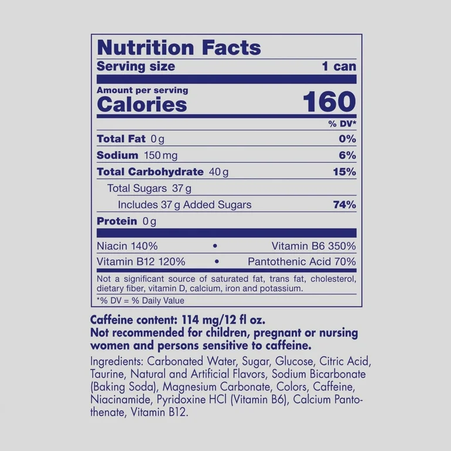

Red Bull on maailma kõige kuulsam energiajoogi bränd. Suur kofeiini ja tauriini sisaldus peaks tegema tarvitaja energilisemaks, hoidma ärkvel, suurendama keskendumisvõimet ja parandama fookust. Aastal 2023 tarvitati uskumatud 12.1 miljardit purki Red Bulli, tehes sellest maailma 3. kõige müüduma karastusjoogi, olles taga ainult Coca-colast ja Pepsist.
Purgis Red Bullis on: vesi (H2O), saharoos (C12H22O11), glükoos (C6H12O6), sidrunihape (C6H8O7), süsinikdioksiid (CO2), tauriin (C2H7NSO3), naatriumkarbonaadid (Na2CO3), magneesiumkarbonaadid (CMgO3), kofeiin (C8H10N4O2), niatsiin (C6H5NO2), B6-vitamiin (C8H11NO3), B12-vitamiin (C63H88CoN14O14), lõhna- ja maitseained, toiduvärvid
Orginaal Red Bulli koostisosad ja toitumisalane teave
Neist ainetest saame elemendid: Vesinik (H), Süsinik (C), Lämmastik (N), Hapnik (O), Naatrium (Na), Magneesium (Mg), Fosfor (P), Väävel (S), Koobalt (Co).